Framing Assistant
Overview#
The Framing Tab is a powerful tool, to decide which deep sky object to image and how to frame it. Using the Framing Assistant you can set the perfect framing for your target and if it does not fit into your current frame also set up a mosaic easily. To accomplish this, the application offers a variety of tools. There are multiple online Sky Survey sources available, a powerful offline planetarium like view as well as loading images into the framing from a previous session.
Getting Started#
The first choice you have to make, is choosing the image source to suite your needs. A brief summary of each source can be found in the general Framing Tab Overview
To know which source is best suited we will divide the guide into three different use cases:
- You do not yet know of a good target and want to search for a good opportunity for tonight's imaging run
- The Target is well known and you want to plan a good framing for it
- A previous session was already done and you want to continue the session with a similar framing
Choosing an opportunity to image#
The framing tab can be utilized to choose a good target for your upcoming night. To achieve this the Offline Sky Survey is a good choice. This source is an interactive Map of the sky and is using Right Ascension and Declination axes as well as a rough circle to display a the outlines of targets. (It does not have any actual images available, but will give a good idea about the size). In conjunction with the altitude chart in the framing tab a perfect target for the night can be chosen.
Loading the Offline Sky Survey#
First select the "Sky Atlas (Offline Framing)" as your image source. Then without looking at any coordinates click on "Load Image" and the right side will load the offline map. As you can see below you won't see much there yet, but don't worry this is an interactive map and you will see its potential soon!
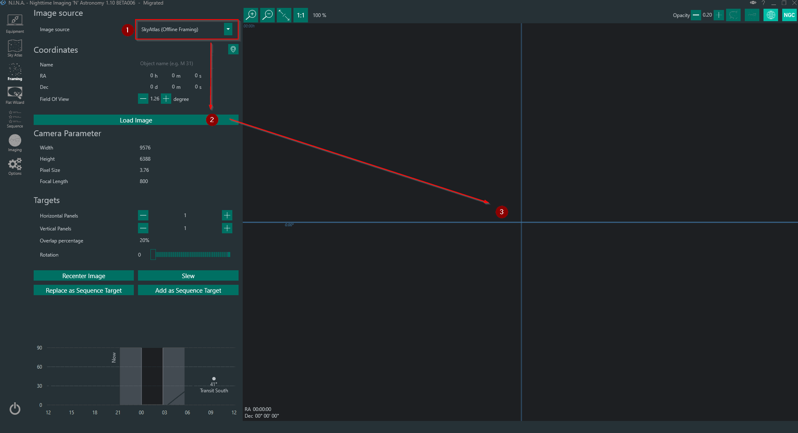
Moving around inside the Offline Sky Survey#
Once the sky atlas is initialized move your mouse cursor onto the image and use the mouse wheel to scroll out as well as drag the map around using the left mouse button. While moving around the sky atlas and getting yourself familiar with the controls, keep an eye on the coordinates on the lower left corner of the image as well as the altitude chart on the lower left of the tab. Both are displaying the coordinates and altitude for the center pixel of the currently displayed section of the sky!
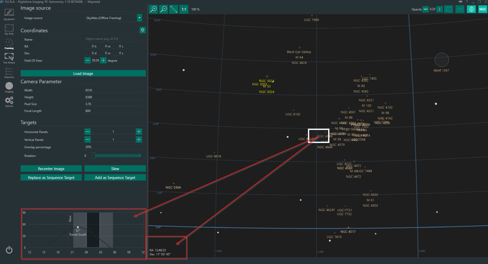
Choosing a good target#
As a general rule of thumb a good target has its altitude peak in the middle of your imaging run. For this guide I'll assume to image the complete night. Now move the center of the image to a point where the altitude chart has its peak in the center of the night like shown below.
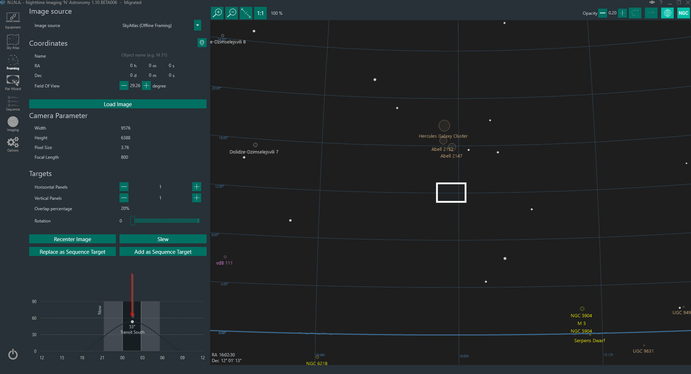
All you have to do now is moving the box up or down, as the peak of the altitude will stay inside the center due to the way the coordinate system is laid out. See which target is near that imaginary vertical line and then drag the rectangle over the target. Remember that you can also zoom in and out to see more or less targets inside the frame. In this example here, I have chosen the "Hercules Galaxy Cluster". As you can see the target fits perfectly into the night and its dimensions will also fit into the current frame.
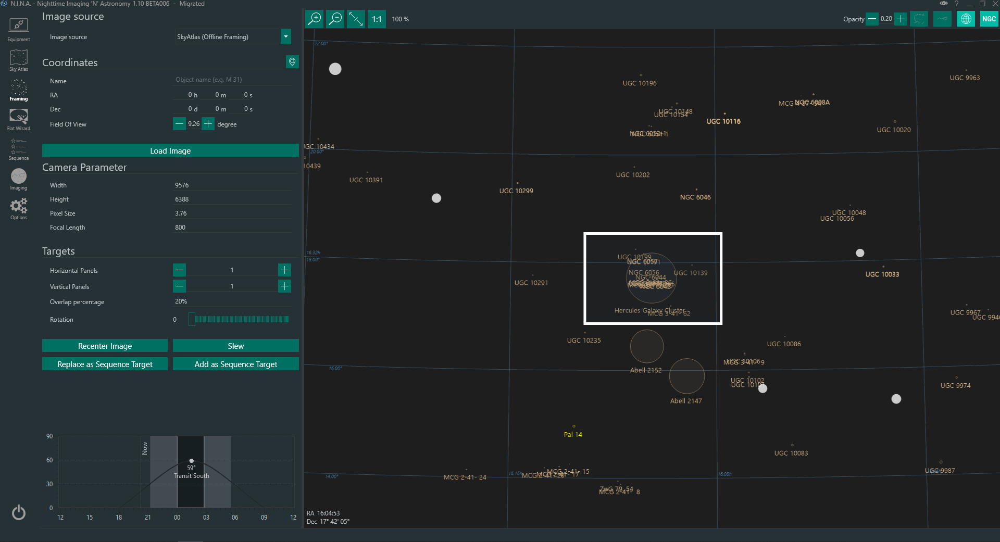
Adjusting the framing with a visual image (optional)#
As the Offline Sky Survey does not have any images, you can now finalize the framing using a different source (this will require internet connection). Choose one of the online Sky Surveys from the dropdown on the top left, adjust your Field Of View to a smaller value that just fits for your framing (alternatively just zoom into the offline framing so that the rectangle almost fills the screen) and afterwards click "Recenter Image". For this example I'm using the NASA Sky Survey. When you hit Recenter the image will be downloaded from the web and then be displayed. This can take a short while. Finally drag and rotate the rectangle to your desired framing.
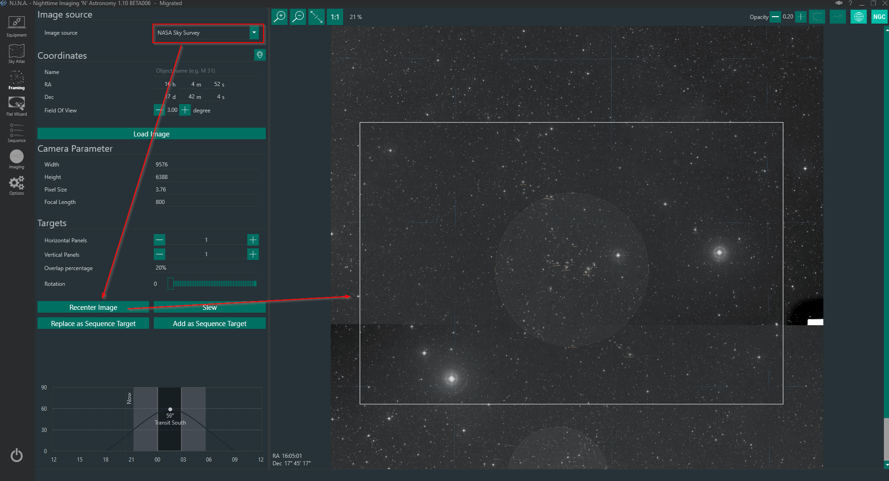
Framing a specific target#
Framing a specific target will follow the same flow as described in the previous section. Basically you skip the steps where you search for a target and directly enter some coordinates for a target and use either the Offline Sky Survey or any of the Online Sky Surveys to frame it.
Continuing a previous session#
When you have shot a specific target already and want to have the same framing again, you can conveniently load in an image from a previous session into the application. By choosing the image source "File" you can quickly load in a single image or a stacked image and it will be loaded into the application. Once loaded you just need to drag and rotate the rectangle to your desired framing.
There are three possible scenarios for loading a file:
Image is already solved and has all required header information (XISF or FITS only)#
This one is the most convenient type to use. Here an image already contains all info required to be displayed inside N.I.N.A. Just load up the file and it will almost instantly render the image and the rectangle with the correct scale without any need to platesolve it again. Furthermore the target name is set as your current reference.
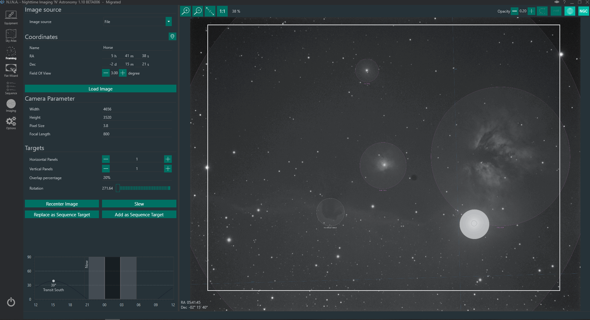
Image does not have solved coordinates, but already has reference coordinates (XISF or FITS only)#
When an image was not solved already and does only contain header information like the target name and the target coordinates, N.I.N.A. does not know the actual image scale and the center of the frame. For this a quick solve of the frame needs to happen. As the header information is already there for a reference, platesolving should be very quick. A dialog will appear asking you to use the found coordinates as a reference and afterwards solve the image. Once the image is solved it will be displayed for framing.
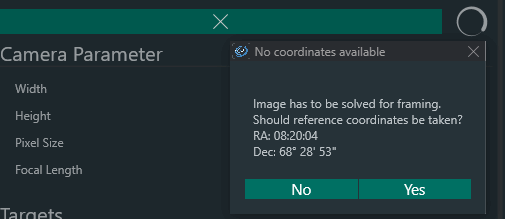
Image does not contain any relevant information#
In case your image does not contain the required headers, or the image format does not have any header information at all (e.g. JPG or RAW formats) the application will need some user assistance to grab the correct reference coordinates to be able to solve the image quickly. Instead of clicking on "Load Image" first, you should specify the target's coordinates instead. Either you can do a quick search by typing in a Name inside the Coordinates field and if found choose the correct coordinates, or you need to enter in the coordinates manually. Once the coordinates are filled, you click on "Load image" and the application will ask you if these coordinates should be used for solving the image. When the solve was successful the image will finally be displayed.
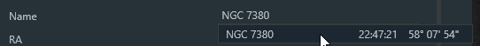
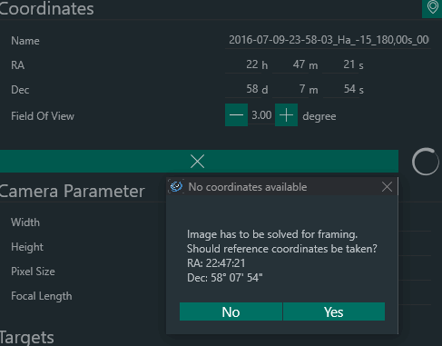
Finalizing the framing#
Your rectangle is dragged to where it is supposed to be, your rotation is also settled. To now finalize this process and put it into good use, you need to create a sequence out of it. There are two options for this available:
"Replace as Sequence Target": This will replace all currently set sequences and replaces it with the current framing target
"Add as Sequence Target": When you have already added a target from a previous framing, you can add this current one to the overall sequences. This is especially useful when you plan on imaging multiple target in one night.
Remember the rotation!#
Your framing was done, you start imaging, but the image rotation is completely different from what you have set inside the Framing Tab?
Well the application unfortunately can't rotate your camera magically (unless you have a motorized rotator). For the majority of people not having a rotator N.I.N.A. offers a quick way to ensure that the rotation for your sequence will match the rotation you set up for framing.
Inside Equipment->Rotator you have to choose the "Manual Rotator" and connect to it. When this little tool is "connected" the application will consider the rotation during slew, center & rotate commands. During the centering of the object the platesolver will determine the actual rotation, compare it with the desired rotation and then sends a signal to the rotator to turn. As we have the manual rotator enabled a small pop up window will show and it will prompt you to turn the camera by xx degrees until you are within the rotational tolerance (set inside Options->Plate Solving->Rotation Tolerance).
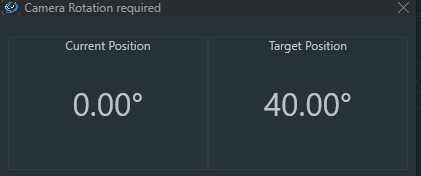
Framing a Mosaic#
Framing a mosaic is really simple. You can follow all the previously mentioned steps to choose a good target for the framing and orientation of your mosaic. The only difference will be that you additionally set "Horizontal Panels" and "Vertical Panels" as well as the overlap of these panels. When having more than one panel selected, the single rectangle gets expanded and divided into multiples using the number of panels as well as the overlap percentage. Furthermore each panel will be assigned a number.
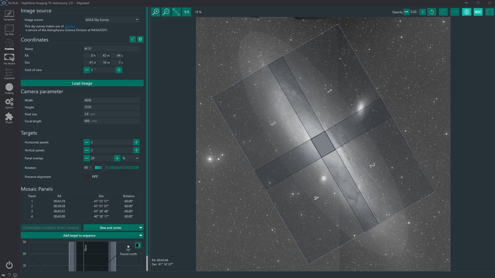
Once you are done with the mosaic planning you can put it into the sequence by replacing or adding it. It is advised to have a sequence template set up prior to adding a mosaic plan to the sequence, so you don't have to set up each panel separately. When adding the mosaic to the sequence, the Target Names will be your Target Name chosen inside the Coordinates section and a postfix of "Panel X" will be appended based on the panel number to easily distinguish these panels. The coordinates will be automatically shifted based on the panels and your mosaic should work without having to worry about anything.
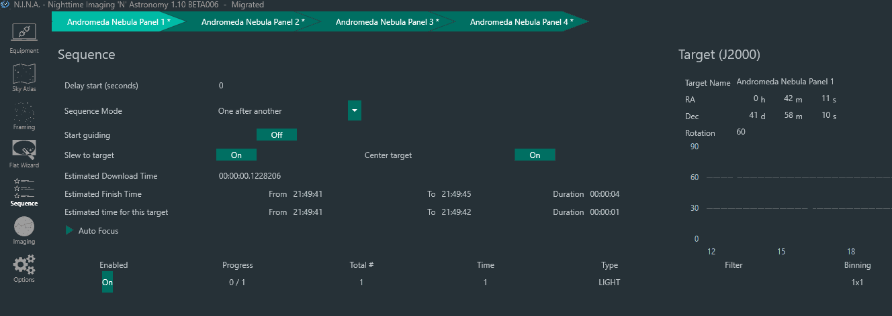
It is important to have the actual camera correctly rotated for a successful mosaic